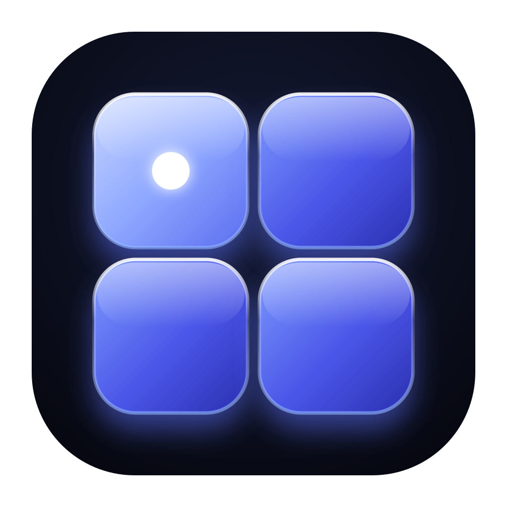

<meta charset="utf-8"><style>body{margin:0;padding:28px;background:#d9dde6;font:16px sans-serif;display:grid;grid-template-columns:repeat(3,300px);gap:24px}figure{margin:0;text-align:center}img{width:300px;height:300px}figcaption{margin-top:4px}</style><figure><figcaption>A-玻璃终端窗</figcaption></figure><figure><figcaption>B-终端窗加节点徽章</figcaption></figure><figure><figcaption>C-玻璃四宫格</figcaption></figure><figure><figcaption>D-叠放会话卡片</figcaption></figure><figure><figcaption>E-单个玻璃块提示符</figcaption></figure><figure><figcaption>F-中心节点玻璃块</figcaption></figure>